Distribution des tâches
Soumetteur: André-Viet Tran
| Tâche | Abderrahim | André | Juan David |
|---|---|---|---|
| TACHE 1 : Analyse | 25% | 50% | 25% |
| TACHE 2 : Design | 45% | 35% | 20% |
| TACHE 3 : OCL | 5% | 5% | 90% |
| TACHE 4 : Justification | 33,3% | 33,3% | 33,3% |
Tâche 1 : Analyse
Diagramme de classe conceptuel
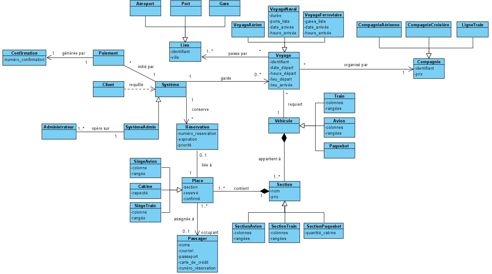Diagramme de séquence système
Volet administratif :
1. Création de lieu (Aéroport, Port ou Gare)
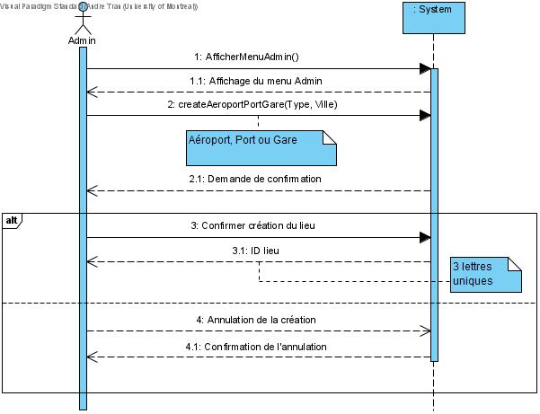2. Modification de lieu (Aéroport, Port ou Gare)
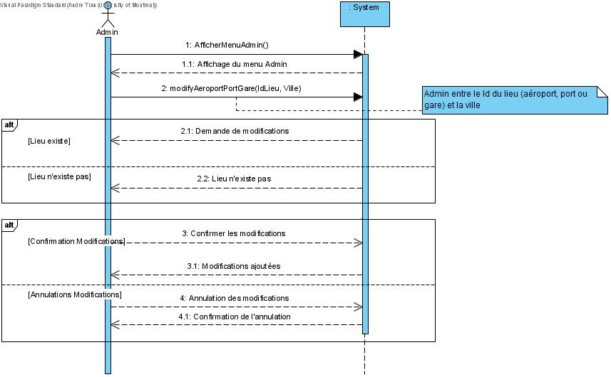3. Suppression de lieu (Aéroport, Port ou Gare)
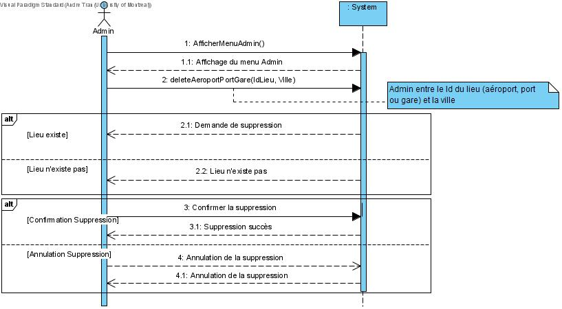4. Création de Compagnie (Aérienne, de croisière ou Ligne de Train)
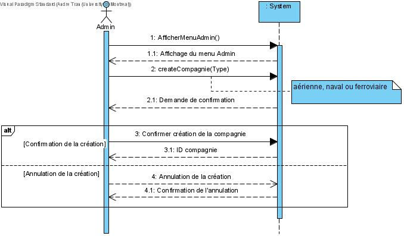5. Modification de Compagnie (Aérienne, de croisière ou Ligne de Train)
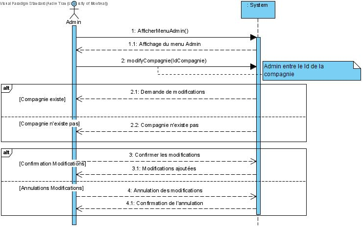6. Supppression de Compagnie (Aérienne, de croisière ou Ligne de Train)
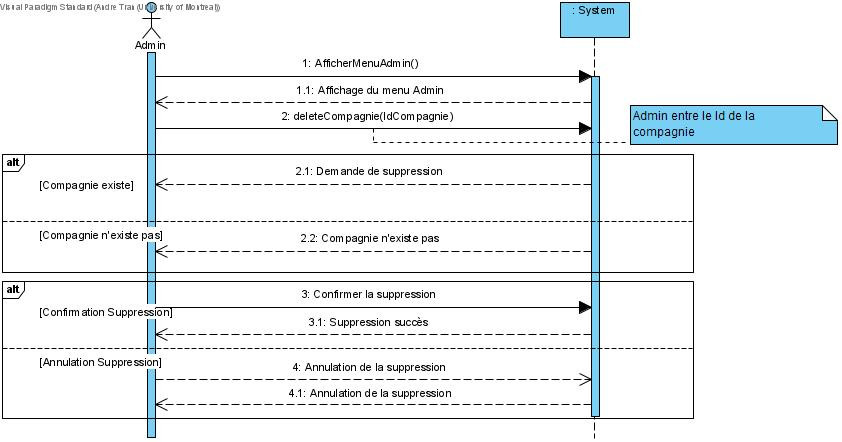7. Création de voyage aérien
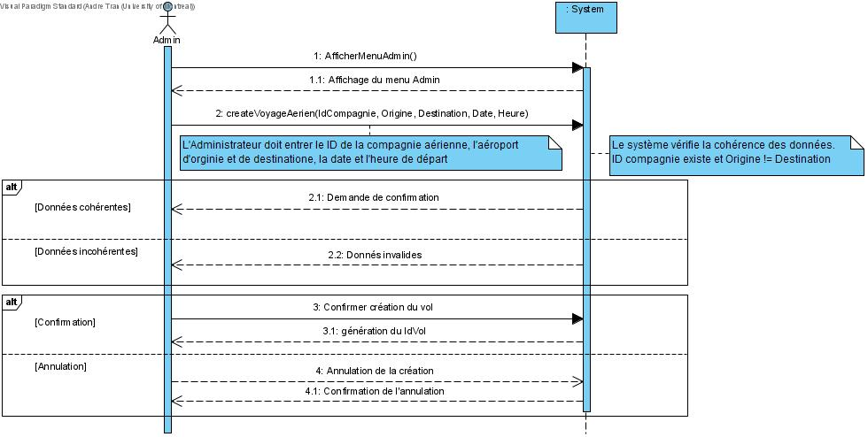8. Modification de voyage aérien
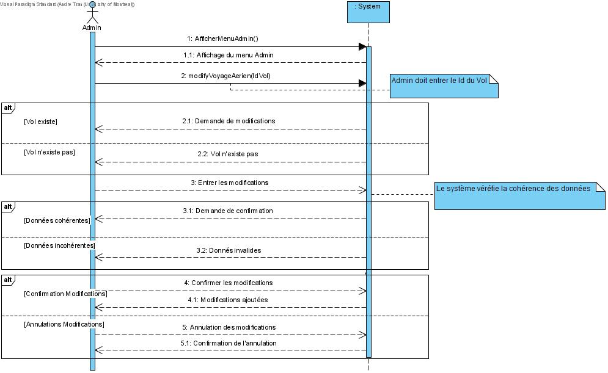9. Création de voyage naval
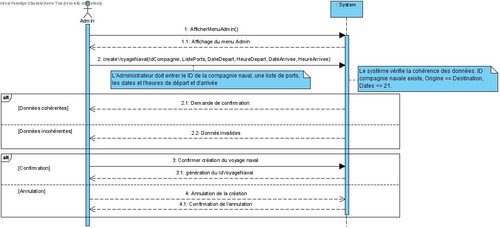10. Modification de voyage naval
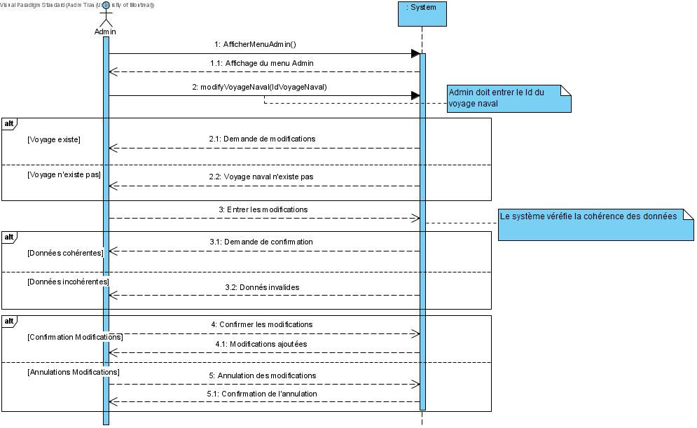11. Création de voyage ferroviaire
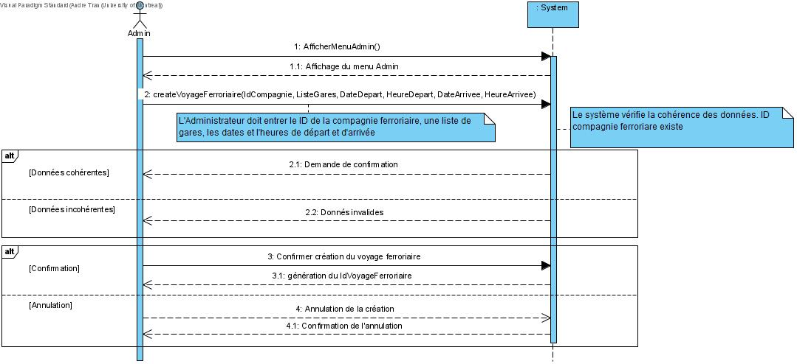12. Modification de voyage ferroviaire
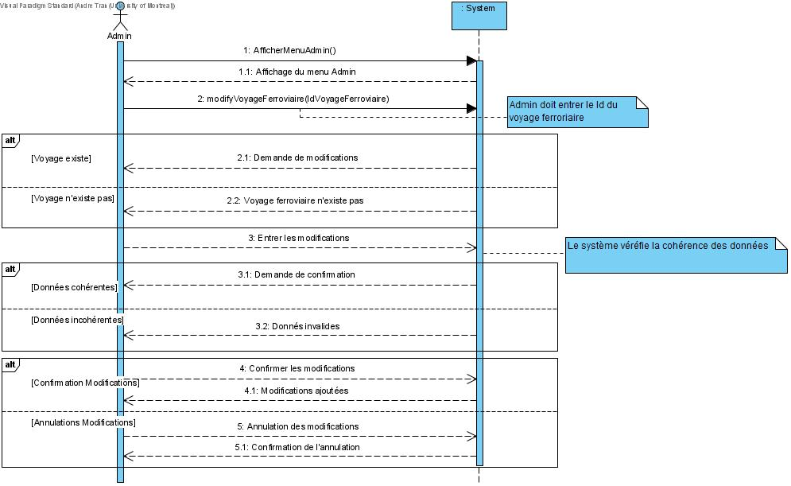13. Supppression de voyage (aérien, naval ou ferroviaire)
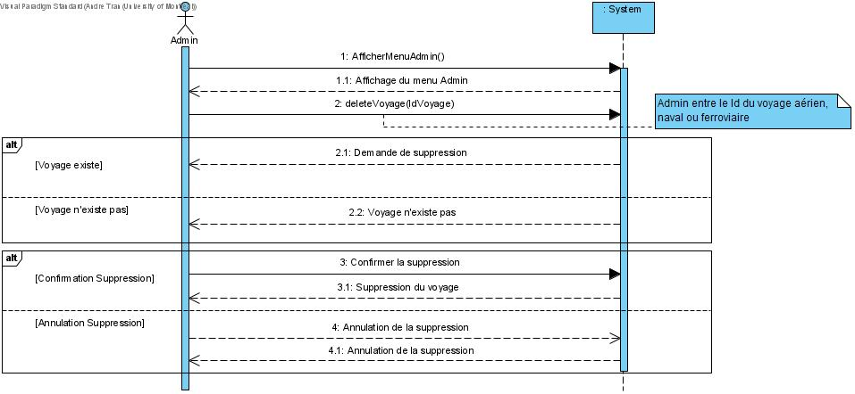14. Création de sections d'un avion

15. Création de sections d'un bateau

16. Création de sections d'un train

17. Assignation des prix pour sections

18. Consultation

Volet Client :
19. Vérification des voyages (aérien ou ferroviaire) disponibles

20. Vérification des voyages navaux disponibles

21. Réservation de siège

22. Réservation de cabine

23. Paiement

Tâche 2 : Design
Diagramme de classe logiciel
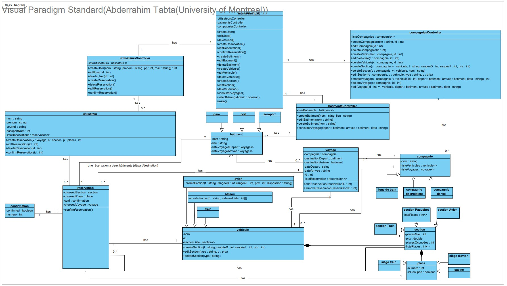Diagramme de séqunce
1. Vérification voyage aérien
fait par : André

2. Vérification voyage naval
fait par : André

3. Vérification voyage ferroviaire
fait par : André

4. Réservation
fait par : Abderrahim
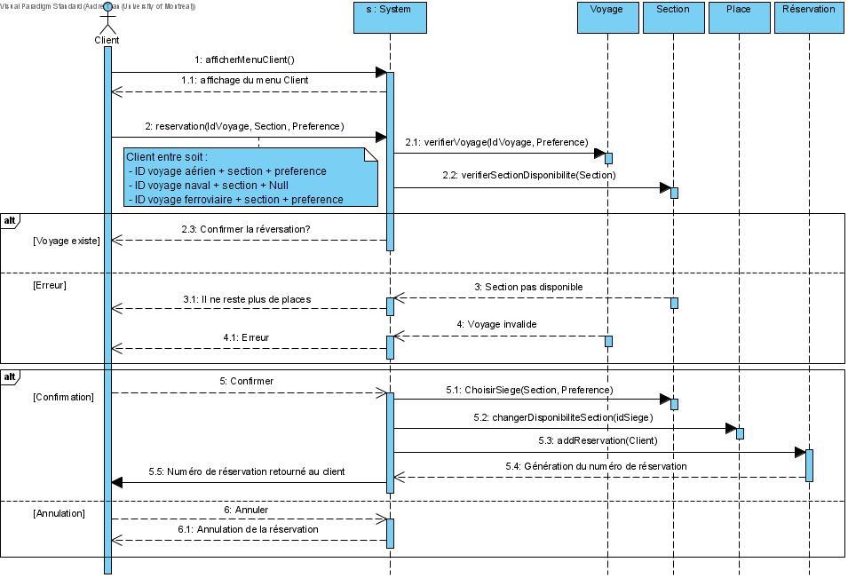5. Paiement
fait par : Juan David
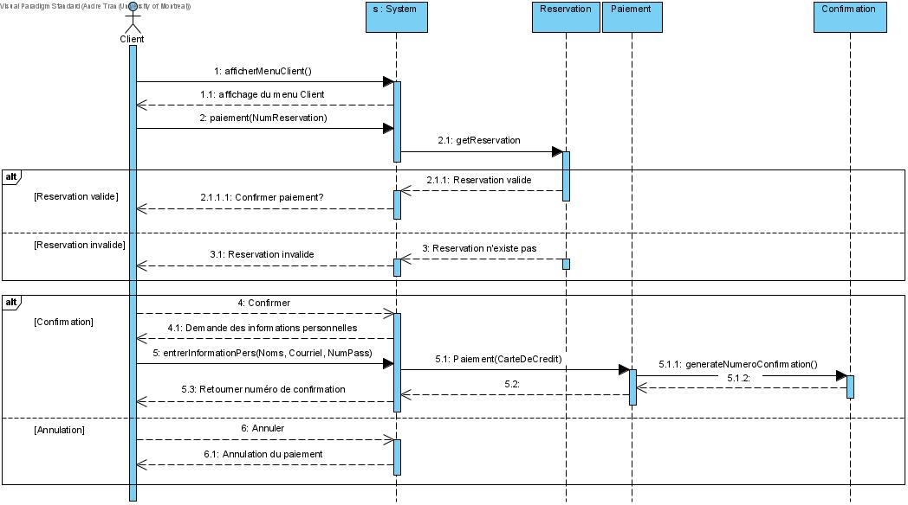Diagramme de paquet
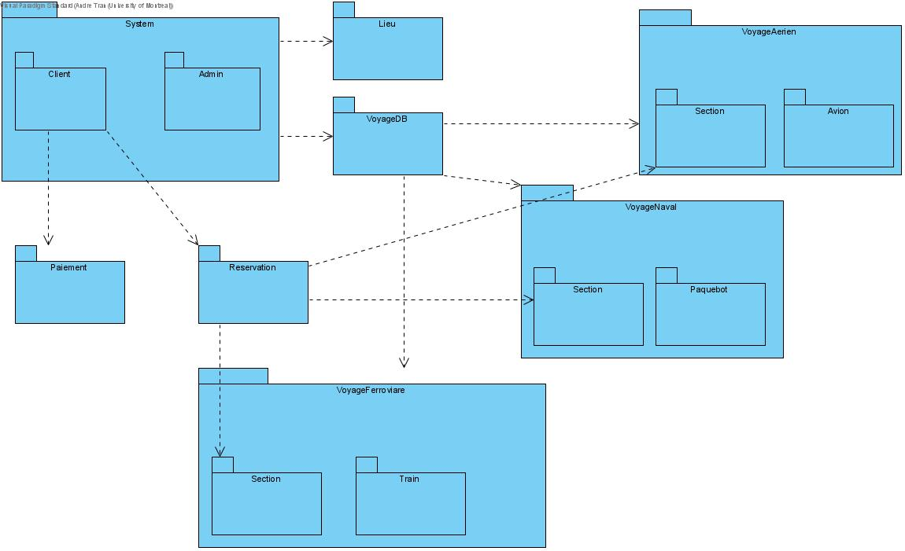Tâche 3 : OCL
OCL
Tâche 4 : Justification
Nous avons décider de regrouper certains diagrammes de séquences système, par example la création,
la modification et la suppression des lieus (aéroprot, port et gare) et des compagnies (aérienne,
de croisière et ligne de train), car les tâches effectuées sont similaires. Le même raisonnement
est appliqué pour la suppression des voyages (aérien, naval et ferroviaire).
De plus, pour ce qui est de la consultation des voyages, nous avons pu regrouper tout dans un
seul diagramme de séquence système puisque c'est le même pour les trois types de voyages. En effet,
c'est seulement la donnée retournée qui peut être présentée différemment. C'est la même chose pour
les DSS d'assignation de prix. En effet, il suffit de sélectionner une section et lui assigner un prix,
donc le type de véhicule (avion/train/bateau) n'a aucune importance. Par contre, pour la création de
sections, nous avons décidé de faire trois DSS, puisque les informations rentrées dans le système (input)
ne sont pas les mêmes pour les trois types de voyages.
Dans les Diagrammes de séquences des actions client (réservation), nous avons décidé ajouter que le Client doit entrer la section qu'il veut réserver.
Pour ce qui est du diagramme de classe, nous avons d'abord une classe interface qui permet à l'utilisateur ou à l'administrateur de lire ou
d'écrire sur la base de données à travers des contrôleurs conçus pour réduire le couplage entre les différents modules.
D'abord, l'interface a accès aux contrôleurs qui peuvent lire et écrire sur la plupart des répertoires
de la base de données. Un contrôleur permet à l'administrateur de gérer les compagnies dans le système. Pour chaque compagnie, il peut ajouter
des véhicules (train/avion/bateau) et leurs sections, autrement dit il peut gérer les sections de chaque véhicule. Un autre contrôleur permet
de gérer les bâtiments dans le système, autrement dit les lieux d'arrivées et de destinations. Pour ce qui est des voyages, un administrateur
peut gérer les voyages de chaque compagnies en utilisant le controlleur compagnie.
Ensuite, l'interface donne accès à des contrôleurs qui peuvent lire dans la base de données et écrire dans
le répertoire des réservations, ce qui est utile pour l'utilisateur. En effet, chaque utilisateur peut gérer ses propres réservations. Un utilisateur peut accéder aux informations
sur les voyages qu'il peut faire (compagnie, section, date) et ensuite réserver et confirmer sa place en écrivant le tout sur la base de données.
Nous avons voulu créer un système d'inscription et de connexion pour qu'un utilisateur qui se connecte n'ait pas accès aux mêmes commandes qu'un
administrateur qui se connecte. Cependant, nous sommes seulement chargés de concevoir le système et non pas le système d'identification de ce dernier.
Nous donnons alors la possibilité dans le menu principal de sélectionner si nous sommes un administrateur avec un booléen. Ceci peut être facilement changé
plus tard pour ajouter plus de fonctionnalités et de sécurité. Donc, dans ce diagramme de classe, le menu principal permet de sélectionner si on est un administrateur
ou non. Si on est un administrateur, nous avons accès à plus de commandes. Si nous sommes un utilisateur, nous savons seulement le droit de consulter les voyages
(départ/destination/arrivées) et de gérer nos propres réservations.